Chan Lee: Scientist. Planner. Builder.
- 01
Scientist.
- M.S. thesis on AI food-safety signals
- EMNLP 2025 paper, with KAIST AI
- Awarded posters at two conferences
- 02
Planner.
- Proposals that won national R&D projects
- Screen specifications for public systems
- Education programs for a district office
- 03
Builder.
- Public systems designed and now running
- Dashboards, films, manuals, decks
- AI-assisted tools and this site
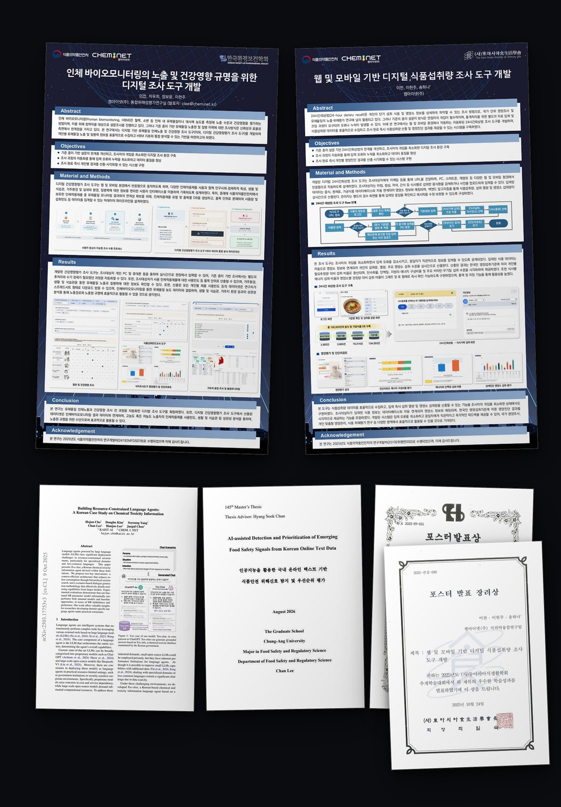
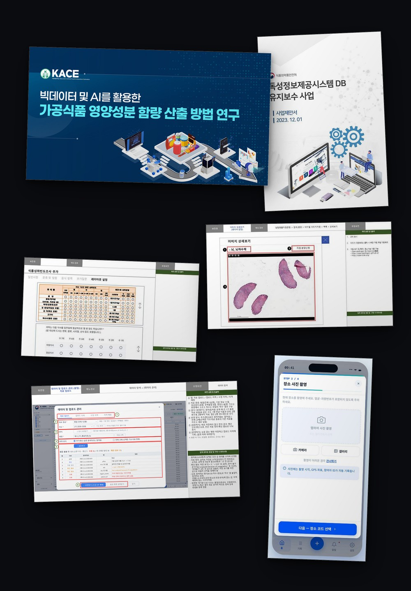
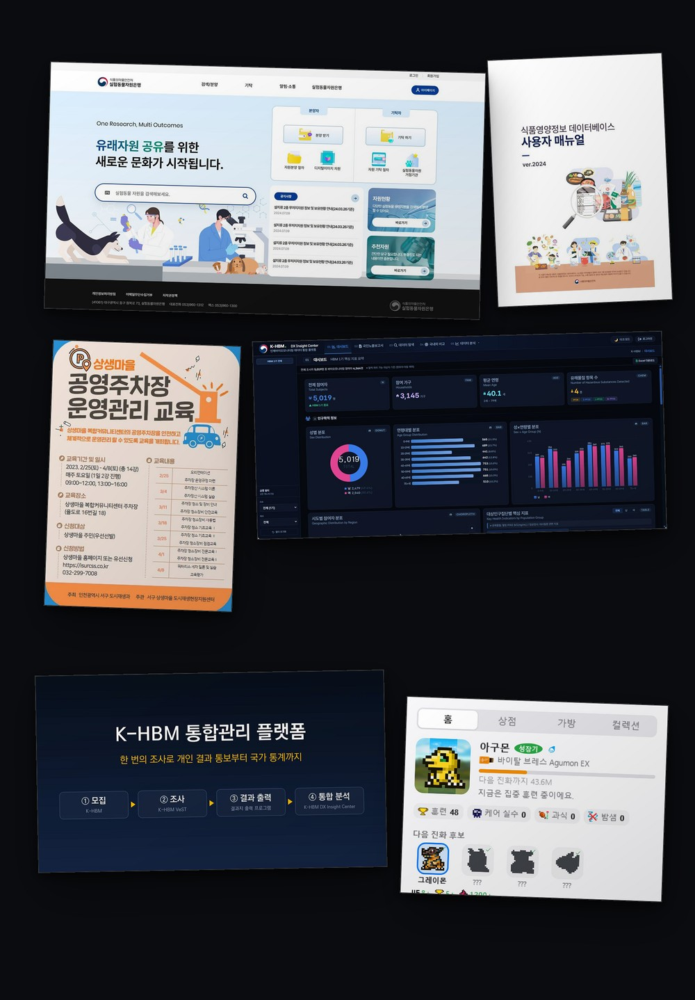
Food scientist with a master’s in food safety and regulatory science from Chung-Ang University. I take national food-safety projects for the Ministry of Food and Drug Safety from proposal to operating system, design the screens, write the reports, and build the AI-assisted tools my work runs on.
- Degrees
- M.S., Food Safety and Regulatory Science, Chung-Ang UniversityB.Eng., Biotechnology, Sejong University
- Based in
- Seoul, Korea
- Experience
- 5+ years
- Contact
- leechan829@naver.com
Projects
Selected projects
National R&D projects and public systems, 2023 to present
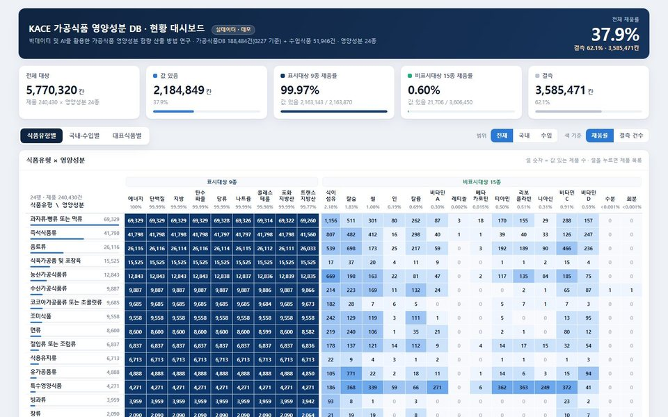
MFDS · National R&D · 2025 to 202601
KACE: AI nutrient estimation, a selected national R&D project
Proposal, evaluation deck and four-year roadmap for estimating the nutrients of processed foods with AI, and the first year’s research.
Open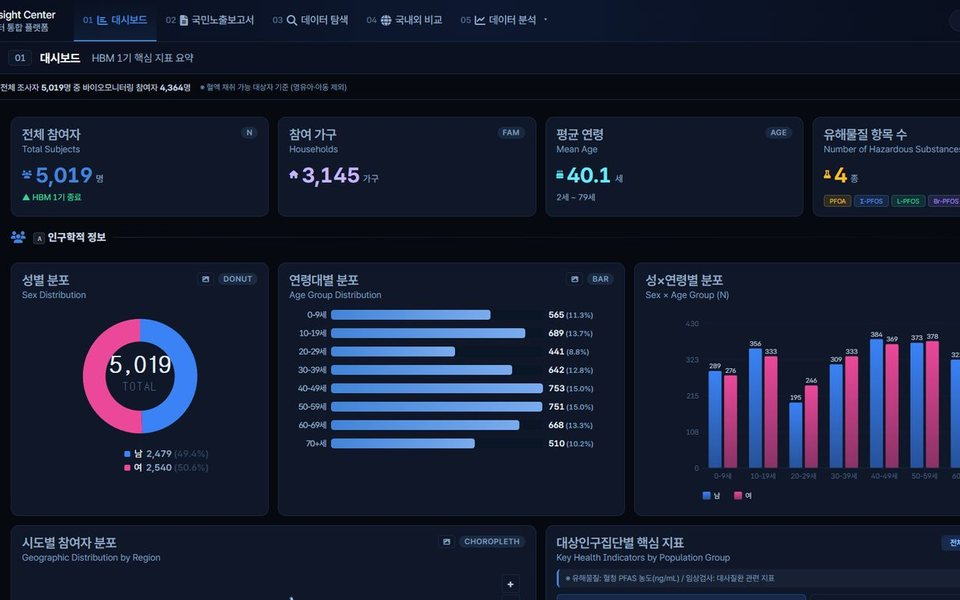
NIFDS · National platform · 2024 to 202602
K-HBM: from survey screens to a live platform
Designed the survey tool now used in three government research projects, led acceptance testing and specified the administrator screens of a national platform in operation. Two conference posters, both awarded.
Open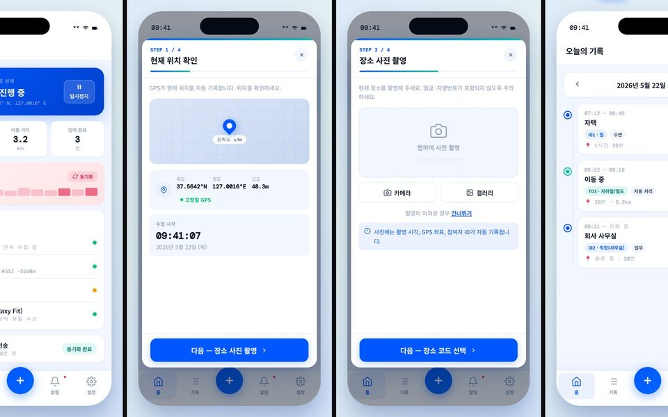
National environmental-health R&D · 2025 to 202603
DEFs: a digital survey system for exposure factors
Proposal and evaluation deck, system diagrams, example screens, the participant app design and training data for AI recognition. Selected; under way since April 2026.
Open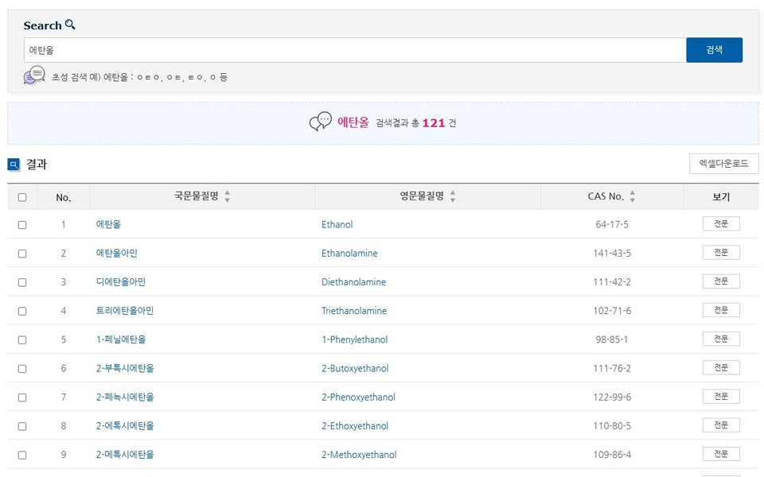
MFDS · Public system · 2024 to 202604
Toxinfo: running a public toxicity information system
A three-year operations contract (2024 to 2026) for the Ministry of Food and Drug Safety’s toxicity information system: releases, screens, security checks, reports, and a chatbot pilot with KAIST that became an EMNLP 2025 paper.
Open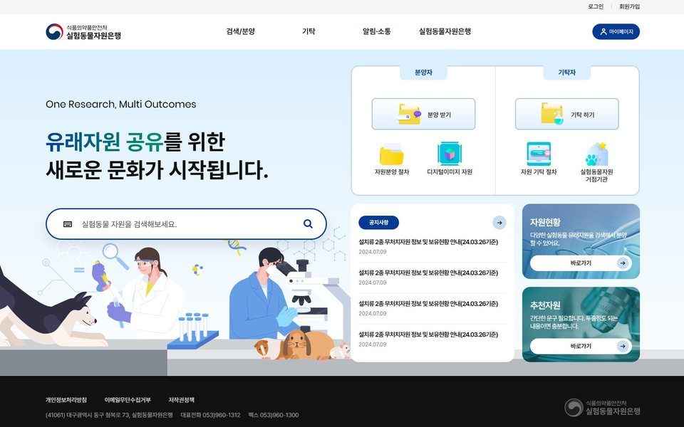
MFDS · Public system · 2024 to 202605
Laboratory Animal Resource Bank: specification and redesign
Specified the 2024 upgrade and planned the 2025 redesign: 38 menus to 20, 200 tables to 85, every planned item delivered.
OpenThesis, education programs, culinary research
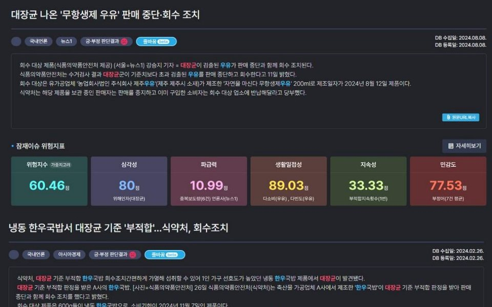
Chung-Ang University · M.S. thesis · 202606
Master’s thesis: AI detection of food-safety signals in online text
A fine-tuned model extracts signals more accurately than a large language model at a fraction of the compute, and scores them in line with ratings from five experts.
Open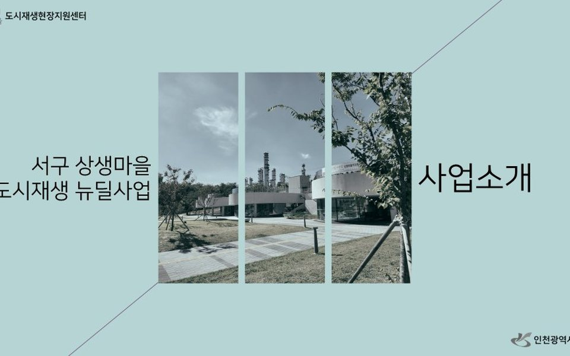
Incheon Seo-gu Office · 2022 to 202307
Education programs, planned and run
Planned and ran sixteen resident courses over seventeen months at an urban regeneration center; decks built for the residents’ cooperative won a grand prize and a national excellence award.
Open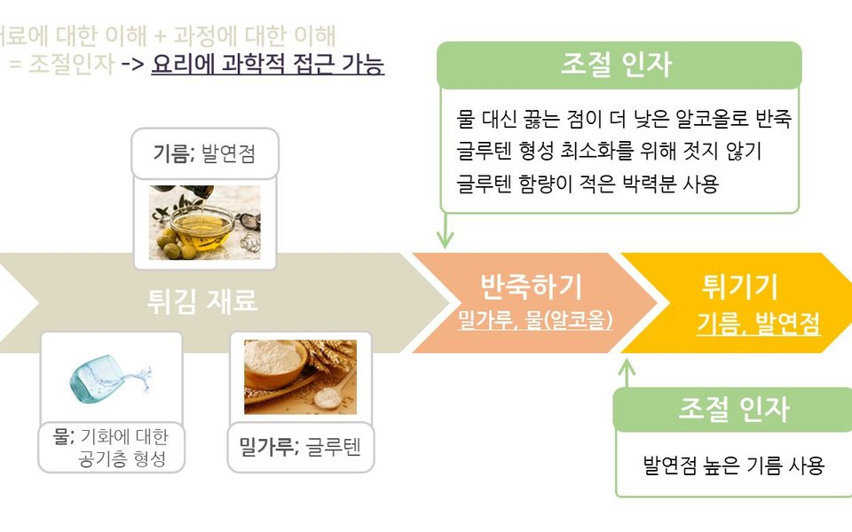
Sempio Foods · Culinary research · 201808
Culinary research at Sempio
Ingredient research for the cooking science team, and a Sebasi talk on cooking science planned and scripted end to end, published on YouTube.
OpenProduction and AI
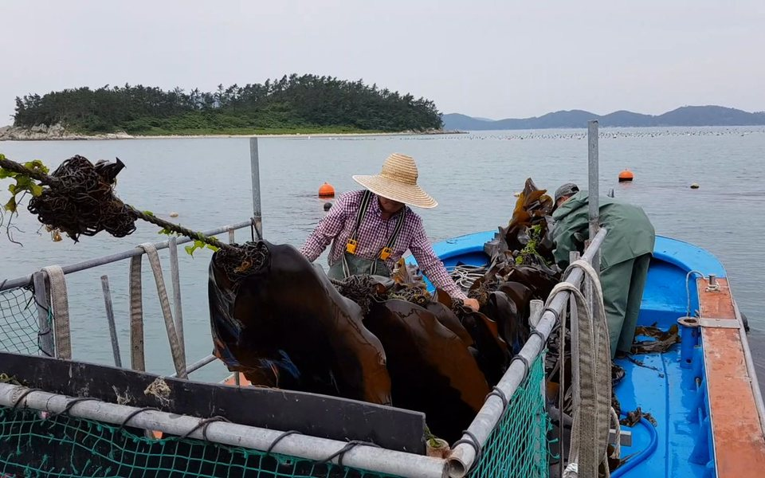
Production · 2017 to 202609
Design, film and photography
A demonstration film for the K-HBM platform, two documentaries, print and photography: production handled in-house, from planning to final cut.
Open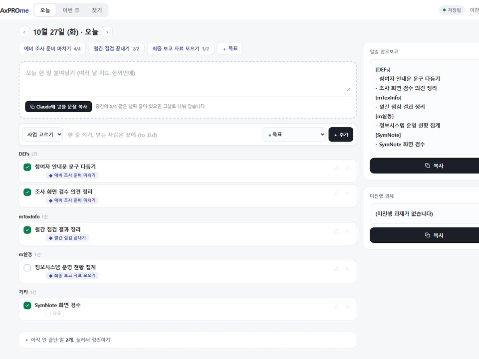
AI-assisted workflow · 202610
Working with AI
Standing rules, a persistent memory and script-based builders keep AI output checkable in daily work; the dashboards, screen designs and apps on this site were built that way.
OpenDocuments
Documents and screens
 Two conference posters, 2025
Two conference posters, 2025 EMNLP 2025 Industry Track paper with KAIST AI: Tox-chat, a Korean toxicity-information language agent
EMNLP 2025 Industry Track paper with KAIST AI: Tox-chat, a Korean toxicity-information language agent KACE proposal presentation
KACE proposal presentation FFQ survey tool project, selection presentation
FFQ survey tool project, selection presentation VeST and FFQ screen designs
VeST and FFQ screen designs K-HBM third-year progress report
K-HBM third-year progress report K-HBM final evaluation deck, my section
K-HBM final evaluation deck, my section K-HBM DX Insight Center, administrator screen specification
K-HBM DX Insight Center, administrator screen specification Toxinfo 2024 maintenance proposal, my chapters
Toxinfo 2024 maintenance proposal, my chapters Toxinfo screen designs: search-result download, initial-consonant search, source database, toxicity table
Toxinfo screen designs: search-result download, initial-consonant search, source database, toxicity table Tox chatbot technical description
Tox chatbot technical description Toxinfo 2024 progress report
Toxinfo 2024 progress reportJourney
Experience and education
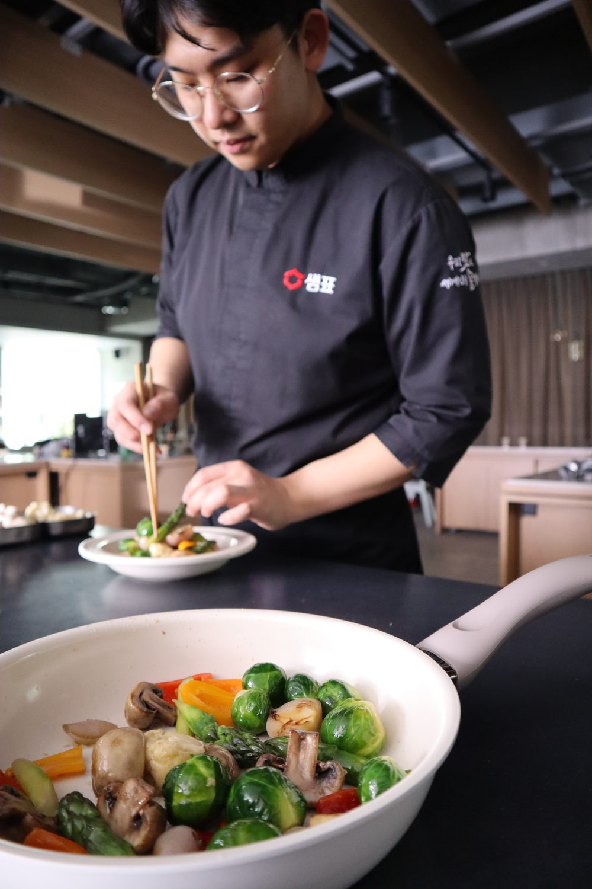
I plan and run national R&D projects and public information systems, many of them for the Ministry of Food and Drug Safety. Before that I ran education and communications at an urban regeneration center in Incheon, and researched Korean cooking at Sempio, where I also wrote a Sebasi talk and produced decks, films and photographs.
My first journal paper came out in 2013, while I was still in high school. In 2026 I completed a master’s degree in food safety with a thesis on AI.
Roles I can take on
- Service planning for information systems
- R&D planning and project management
- Education planning and operations
- Content, communications and design
- AI adoption in everyday work (AX)
Experience
- Jul 2023 to presentCheminet · Senior Researcher
- Researcher on national R&D projects, from proposal and selection to execution and final reporting
- Operations of public information systems for the Ministry of Food and Drug Safety
- Proposals and decks that won projects; execution plans and reports
- Planning of web and mobile survey systems: screen specifications, definitions, development review
- Day-to-day contact for clients and partner institutions, including universities and KAIST
- Mar 2022 to Jul 2023Incheon Seo-gu Office · Urban Regeneration Division · Field coordinator (contract, extended)
- Planned and ran resident education programs
- Newsletter editing and design; posters, banners and decks
- Resident grant program: document review and budget processing; community festival support
- Feb 2018 to Aug 2018Sempio Foods · Culinary research mentee program · Researcher (contract)
- Research on Korean food culture; ingredient studies and product review for the cooking science team
- Planning, script and slides for a Sebasi talk
- Research booklet, event films and posters, menu and advertising photographs
Government R&D projects
- 2024 to 2026Toxinfo, MFDS toxicity information system: maintenance and operationsOperations for the three-year contract; Tox chatbot pilot with KAIST (2024), later an EMNLP 2025 paper
- 2024 to 2026Laboratory Animal Resource Bank: upgrade, improvement, operationsScreen specification (2024), execution plan and menu redesign (2025), operations
- 2024 to 2026K-HBM: integrated management model for human biomonitoring data (NIFDS)VeST survey tool build and operations, testing, administrator screens, demo film, report sections
- 2025 to 2029Precision nutrition program for vulnerable groups (MFDS): dietary survey platformSurvey tool operations, screen design, administrator pages
- 2025Food frequency survey method and web survey tool (NIFDS, with Sahmyook University)Web and mobile survey tool: screens, testing, operations; two conference posters
- 2026 to 2029KACE: AI-driven nutrient estimation for processed foodsProposal, roadmap, kickoff deck; year-one research tasks
- 2026 to 2028DEFs: digital exposure-factor method and survey systemProposal; diagrams and example screens; participant app design; training data
- 2023 to 2024LIMS test and inspection data studyParticipating researcher
- 2024Rural Development Administration food data; food nutrient information database; CASA air-quality systemData mapping, operations, screen design
- 2024 to 2026Films for seven public information systemsPlanning, capture, editing
Education
- Sep 2024 to Aug 2026M.S., Food Safety and Regulatory Science, Chung-Ang University Graduate SchoolGPA 4.28 / 4.5
- Mar 2014 to Feb 2022B.Eng., Biotechnology, Sejong University
- 2014Incheon Sangok High School, science track
Thesis, paper and conference presentations
- 2026AI-assisted Detection and Prioritization of Emerging Food Safety Signals from Korean Online Text DataMaster’s thesis, Chung-Ang University
- 2025Building Resource-Constrained Language Agents: A Korean Case Study on Chemical Toxicity InformationEMNLP 2025 Industry Track, Suzhou, with KAIST AI. Co-author. Tox-chat, a Korean toxicity-information language agent
- Nov 2025Development of a digital survey tool for identifying exposure and health effects in human biomonitoringKorean Society of Environmental Health, poster, first author. Poster Presentation Award
- Oct 2025Development of a web and mobile tool for surveying food intakeEast Asian Society of Dietary Life, poster, first author. Poster Encouragement Award
- 2013Antioxidant and skin whitening effects of Inonotus obliquus methanol extractJournal of Mushroom Science and Production 11(2), with Incheon National University. Written as a student at Incheon Sangok High School, third author
Awards
- 2025Poster Presentation Award, autumn conferenceKorean Society of Environmental Health
- 2025Poster Encouragement Award, autumn conferenceEast Asian Society of Dietary Life
- 2018Top prize, video category, World Friends Korea youth volunteer contestKorea University Council for Social Service
- 2017Sejong volunteer award; Sejong KB creative volunteer corps encouragement awardSejong University
- 2016Top prize, signature product proposal contest (Sejong Box: planning and making)Sejong University
- 2016Best program award, UnivExpo SeoulUnivExpo Seoul organizing committee
Certificates and training
- Oct 2021Barista Level 2Korea Coffee Association
- Jul to Aug 2021NCS courses: design draft development, visual ideationGreen Computer Art Academy
- May 2016HACCP team leader courseKorea Food Information Institute
Activities
- Aug 2017 to Jan 2018World Friends Korea youth volunteers, KyrgyzstanClasses in my field; publicity film and card news
- Sep 2016 to Feb 2017Sejong KB creative volunteer corpsCampus environment and study motivation projects
- Mar 2016 to Dec 2016Green Consumers Network, Greenit (5th class)Campaigns for green and safe consumption; UnivExpo
Volunteering
- 2012 to 2016403 hours, 115 sessionsDaily-living support at Serim Hospital, home repairs in Incheon, school construction and teaching in Laos, blood-drive and smoking-cessation campaigns at Sejong University